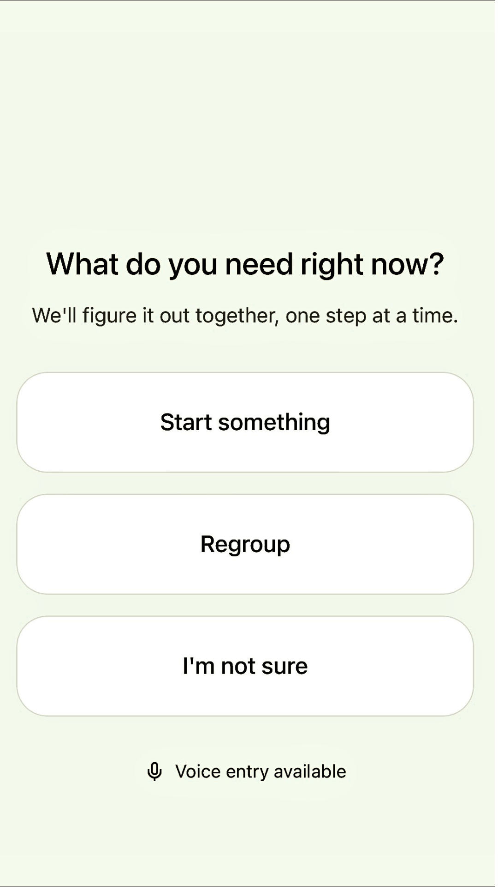
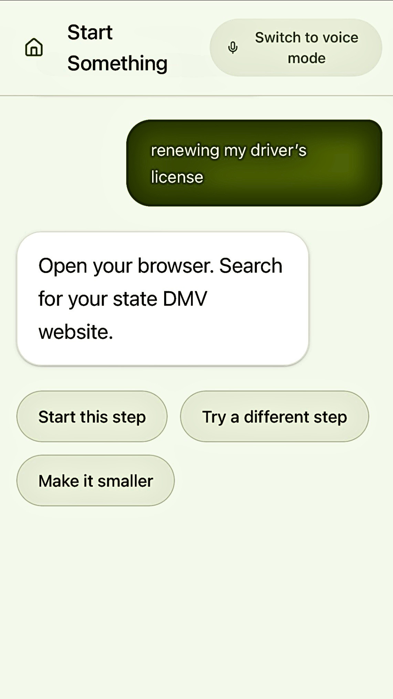
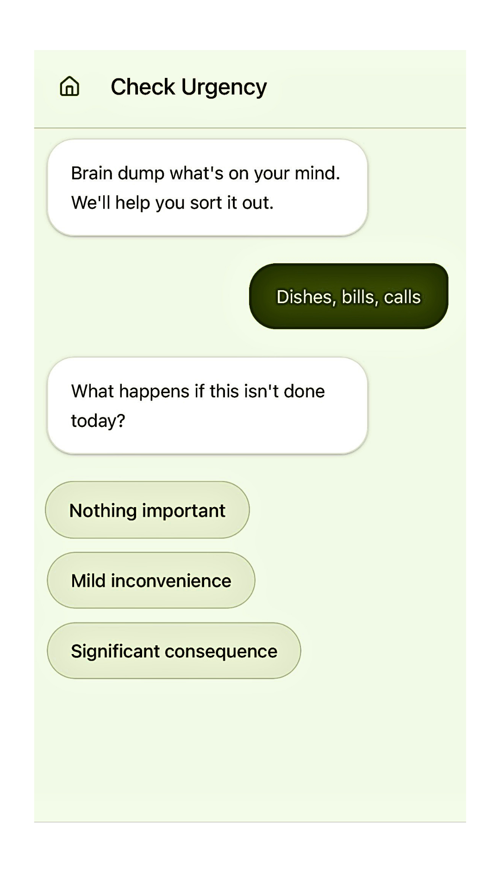
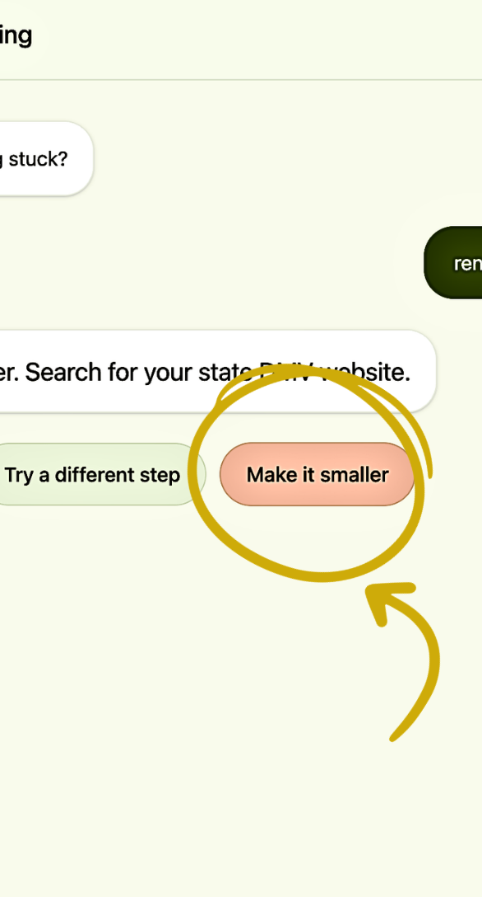
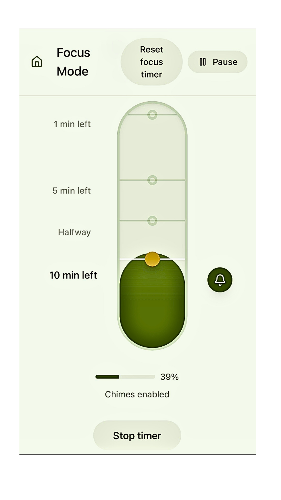
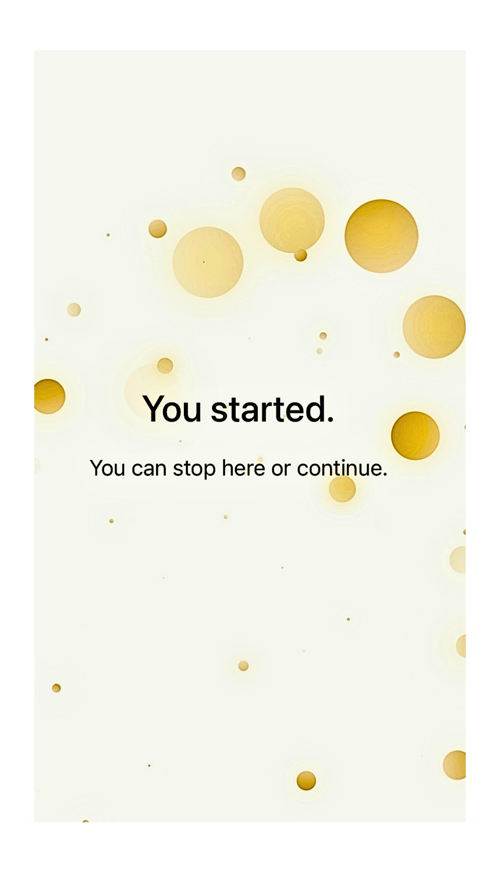

Home
Entry point for reducing activation energy and clarifying next action.
AI-powered task initiation for cognitive overload.
A UX case study exploring how AI reduces cognitive load by translating intention into concrete first steps.

Entry point for reducing activation energy and clarifying next action.

A concrete example of turning an overwhelming task into a first actionable step.

Helps users assess real urgency instead of reacting to internal pressure alone.

Breaks a task into a smaller, more psychologically reachable unit.

Creates a bounded, finite container for attention during initiation.

A brief celebratory transition reinforces progress and gives emotional closure to the task.
Scaffold is designed as a support system, not a productivity optimizer or autonomous agent. Its behavior is intentionally constrained to preserve user autonomy, minimize unintended influence, and reduce cognitive burden.
These constraints prioritize clarity, consent, and reversibility over automation and optimization.